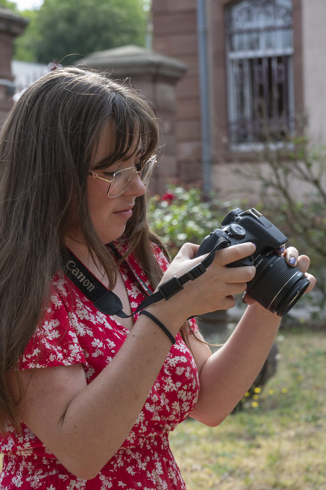
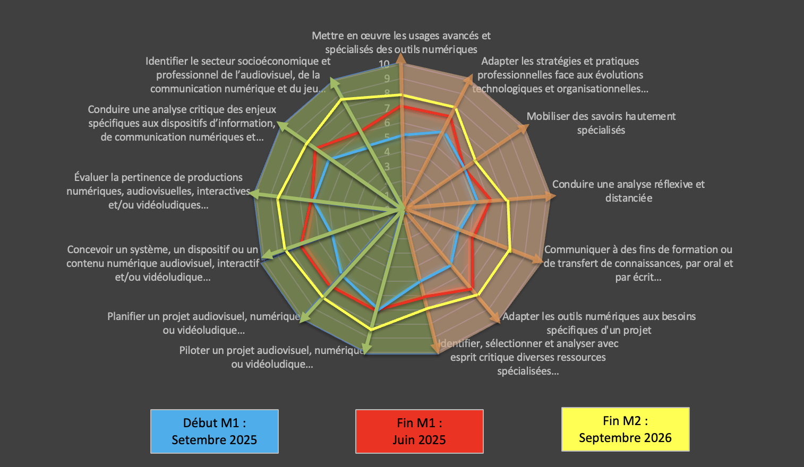

Défiler

Passionnée par la communication et la création de contenus, je serai prochainement diplômée d'un Master Création de projets numériques à l'Université de Lorraine. Au fil de mon parcours, j'ai développé des compétences en communication digitale, audiovisuel, gestion de projets et conception graphique.
Mes différentes expériences en collectivités territoriales, en agence de communication ainsi qu'au sein du ministère des Armées m'ont permis de mener des projets variés : gestion des réseaux sociaux, création de supports print et numériques, réalisation de vidéos, couverture d'événements, photographie et coordination de projets de communication.
Curieuse, créative et polyvalente, j'aime concevoir des contenus qui ont du sens et apporter des réponses pertinentes aux enjeux de communication. À travers ce portfolio, je vous invite à découvrir une sélection de mes réalisations, reflet des compétences et de l'expérience que j'ai acquises au fil de mon parcours universitaire et professionnel.
Formation, expériences et compétences en communication digitale, audiovisuel et création de contenus.
État-Major de la Zone de Défense Est
Gestion des réseaux sociaux, coordination du Salon du Livre Militaire 2026 et création d'un mémento sur l'utilisation de l'intelligence artificielle au sein des armées.
Communauté de Communes d'Alsace Bossue
Gestion des réseaux sociaux, communication événementielle, création de magazines de programmation et relation avec les partenaires.
Carrelage Gerber
Conception et réalisation d'un catalogue produit destiné aux clients.
ML Communication
Création d'affiches, gestion des réseaux sociaux et rédaction de contenus.
Mosaik Cristal TV
Gestion de projets, rédaction d'articles et propositions de stratégies de communication.
Université de Lorraine - Metz
Parcours Création de Projets Numériques.
IUT Robert Schuman - Illkirch
Parcours Publicité.
Lycée de la Communication - Metz
Formation en stratégie de communication, création de contenus et gestion de projets.
🎵 Musique
✈️ Voyages (États-Unis, Italie)
📸 Photographie
🎨 Dessin
Une sélection de créations en communication, design, photographie et digital.
Les stratégies de communication des agences de K-pop sur les réseaux sociaux
Télécharger mon mémoireConception et évaluation d'un dispositif visant à former et à optimiser les usages de l'intelligence artificielle générative au sein de l'armée
Télécharger mon mémoire
Ce radar met en évidence l'évolution de mes compétences entre le début de mon
expérience professionnelle et la fin de mon Master 2. Il permet de comparer
mon niveau initial avec celui que j'ai atteint après plusieurs mois de pratique
en situation professionnelle.
Les compétences que j'ai particulièrement développées au cours de cette période sont :
Concevoir et piloter des projets numériques. Au début de mon parcours, j'étais principalement habituée à réaliser les tâches qui m'étaient confiées. Mon expérience professionnelle m'a progressivement permis de prendre davantage de responsabilités et d'avoir une vision plus globale des projets. J'ai notamment pu participer à l'organisation d'événements, à la mise en place de stratégies de communication et au suivi de différents projets, jusqu'à prendre une véritable position de cheffe de projet lors du Salon du Livre Militaire 2026.
Concevoir des contenus numériques et audiovisuels.
Cette compétence était déjà présente dans mon parcours universitaire, mais mon
expérience professionnelle m'a permis de la développer dans des situations concrètes
et pour différents publics. J'ai réalisé de nombreux contenus pour les réseaux sociaux,
notamment des visuels, des vidéos, des publications et des contenus adaptés à
différentes plateformes. J'ai également pu travailler sur des projets audiovisuels,
comme la réalisation d'une vidéo autour de l'exercice Orion 26.
Mobiliser des outils numériques et l'intelligence artificielle générative.
L'IAG était une compétence que je souhaitais particulièrement développer durant mon
Master 2. J'ai progressivement appris à l'utiliser comme un véritable outil d'aide
dans mes projets : recherche d'idées, rédaction, création de contenus, génération
de visuels ou encore aide à la conception. Ces différentes expérimentations m'ont
surtout appris à prendre du recul sur les productions générées, à les vérifier et
à les adapter avant de les intégrer dans un projet.
Analyser et porter un regard critique sur les productions numériques.
Au fil de mes expériences, j'ai appris à ne pas seulement produire un contenu, mais
également à analyser sa pertinence par rapport à l'objectif, au public et au contexte.
Cette compétence s'est particulièrement développée avec l'utilisation de l'IAG,
puisque les productions générées nécessitent systématiquement une vérification,
une sélection et parfois une importante phase de retouche. Mon expérience professionnelle
m'a ainsi permis de développer davantage mon autonomie et ma capacité à prendre des décisions.
J'ai donc particulièrement progressé dans la gestion de projet, la conception de
contenus numériques, l'utilisation des outils numériques et ma capacité à prendre du
recul sur mes productions. Ce parcours m'a permis de passer progressivement d'un rôle
principalement orienté vers l'exécution à une approche plus globale, avec davantage
d'autonomie, de responsabilités et de prise d'initiative.

Créons quelque chose de beau ensemble.